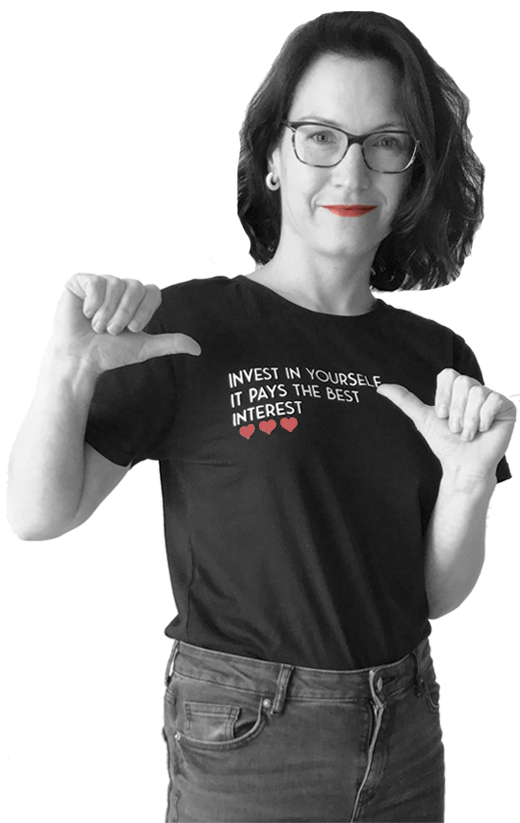

Už jsem velká
A tak vím co chci. Po letech rodičovské dovolené a nudné administrativní práce nazrál čas ke změně. Jsem celkem hrdá, že jsem se během dvou měsíců samstudia dostala sem.
A proč weby? Vždy mně to táhlo tímhle směrem. Kurz kódování webových stránek není konec cesty. Jako multipotenciál se cítím na pořádný rozlet a tak se těším, že zabrousím i k UX, copywritingu, možná okusím trochu marketingu a pak někde zakotvím.
Jinak se taky zajímám o spoustu dalších věcí. Ráda někam vyrazím se svými dětmi, těší mně dobrá muzika, knížky, zahrada, motání věnců, kávičky se sousedkama. Baví mně kreativita a seberozvoj.
